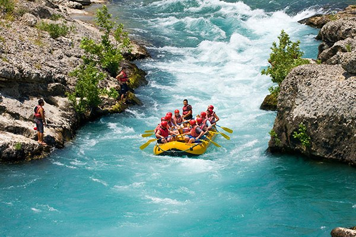
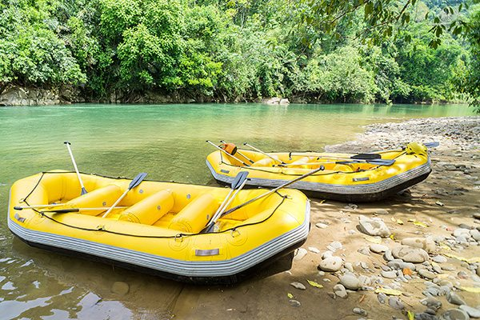

Conheça a Tartanhar Rafting

Nossa missão é oferecer aventuras emocionantes com total segurança, promovendo o respeito ao meio ambiente e proporcionando experiências que criem lembranças para toda a vida..

Nossa missão é oferecer aventuras emocionantes com total segurança, promovendo o respeito ao meio ambiente e proporcionando experiências que criem lembranças para toda a vida..
A Tartanhar Rafting nasceu da paixão por esportes de aventura e pelo desejo de compartilhar as belezas naturais dos rios com pessoas de todas as idades. Fundada por um grupo de amigos apaixonados pela natureza, a empresa começou oferecendo pequenos passeios locais e, ao longo dos anos, conquistou a confiança de centenas de aventureiros graças ao compromisso com a segurança, a qualidade dos serviços e o respeito ao meio ambiente.
Hoje, a Tartanhar Rafting oferece experiências para iniciantes e praticantes experientes, sempre acompanhadas por guias qualificados e equipamentos certificados. Nossa missão é transformar cada descida pelo rio em uma aventura inesquecível, proporcionando diversão, emoção e momentos especiais em contato com a natureza.



